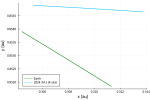
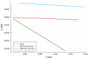

Orbit determination
NEOs uses the procedure described in [6] to determine the orbit of a Near-Earth Object, either from scratch (initial orbit determination) or starting from a pre-existing orbit (orbit refinement). Below, we illustrate a typical orbit determination workflow by computing the orbit of 2024 XA1, an asteroid which hit Earth on December 3rd, 2024.
Orbit determination problem
First, we declare the orbit determination problem that we want to solve, which consists of three basic elements [7]:
- the dynamical model,
- the observations and,
- the error model.
Selecting the dynamical model and fetching the optical astrometry of a particular object have already been discussed in previous sections of this documentation. On the other hand, in NEOs an error model is composed of a weighting scheme and a debiasing scheme.
Currently, NEOs supports three weighting schemes:
UniformWeights: all observations have the same 1 arcsec weight.SourceWeights: the weights are extracted from the observations' format.Veres17: assign weights according to [8];
and four debiasing schemes:
ZeroDebiasing: all debiasing factors are set to zero.SourceDebiasing: the debiasing factors are extracted from the observations' format.Farnocchia15: assign debiasing factors according to [9].Eggl20: assign debiasing factors according to [10].
Most weighting and debiasing schemes do not define a custom value for each observatory. In that case, the default weight is 1 arcsec and the default debasing factor is 0 arcsec.
Thus, to declare the orbit determination problem use the following sintax:
using NEOs
optical = fetch_optical_ades("2024 XA1", MPC)
od = ODProblem(newtonian!, optical[2:5];
weights = Veres17, debias = Eggl20)Orbit determination problem
Dynamical model: newtonian!
Optical astrometry: 4 observations of type NEOs.OpticalADES{Float64}
Radar astrometry: None
Weighting scheme: Veres et al. (2017)
Debiasing scheme: Eggl et al. (2020)
Initial orbit determination
Next, to compute a preliminary orbit of 2024 XA1, we use the initialorbitdetermination function:
params = Parameters(
maxsteps = 100, order = 15, abstol = 1E-12,
coeffstol = Inf, bwdoffset = 0.042, fwdoffset = 0.042,
tsaorder = 2, adamiter = 500, adamQtol = 1e-5,
jtlsorder = 2, jtlsmask = false, jtlsiter = 20,
lsiter = 10, significance = 0.99, outrej = false,
)
orbit0 = initialorbitdetermination(od, params)┌ Warning: Updating TaylorSeries.default_space[]; existing TaylorN and HomogeneousPolynomial objects keep their original JetSpace, while future default-space constructors use the new default JetSpace.
│ old_order = 6
│ old_numvars = 2
│ new_order = 6
│ new_numvars = 6
└ @ TaylorSeries ~/.julia/packages/TaylorSeries/NRC4b/src/hash_tables.jl:260
* Minimization over the MOV converged in 70 iterations to:
MMOVOrbit{Float64, Float64}
---------------------------------------------------------------------
Dynamical model: newtonian!
Astrometry: 4 observations (0 outliers) spanning 0.01686793 days
Epoch: 2.460647755951352e6 JDTDB (2024-12-03T06:08:34.197 TDB)
NRMS: 0.08998961886762365
---------------------------------------------------------------------
Variable Nominal value Uncertainty Units
x +3.137836151133E-01 +3.377900854398E-03 au
y +8.546433012614E-01 +3.853737121435E-03 au
z +3.706970772365E-01 +1.686116312918E-03 au
vx -2.030521361316E-02 +4.467946116026E-03 au/day
vy +6.571761378468E-04 +5.625719362488E-03 au/day
vz +3.760948041194E-04 +2.259030881669E-03 au/day
* Jet Transport Least Squares converged in 1 iterations to:
LeastSquaresOrbit{Float64, Float64}
---------------------------------------------------------------------
Dynamical model: newtonian!
Astrometry: 4 observations (0 outliers) spanning 0.01686793 days
Epoch: 2.460647755951352e6 JDTDB (2024-12-03T06:08:34.197 TDB)
NRMS: 0.08998888798106758
---------------------------------------------------------------------
Variable Nominal value Uncertainty Units
x +3.137851143227E-01 +3.541423946514E-03 au
y +8.546450116446E-01 +4.040295186011E-03 au
z +3.706978255825E-01 +1.767740653943E-03 au
vx -2.030464671203E-02 +4.610322323391E-03 au/day
vy +6.575502003217E-04 +5.819888351323E-03 au/day
vz +3.763626681881E-04 +2.331858939106E-03 au/daySome of the most important parameters used in initialorbitdetermination are:
bwdoffset/fwdoffset: how much time [in days] to integrate beyond the first/last observation.tsaorder/gaussorder/jtlsorder: the degree of the jet transport expansions used in different sections of the orbit determination routine.lsiter/jtlsiter: the maximum number of iterations for normal and jet transport least squares.significance: chi-square significance level, used to decide whether an orbit is acceptable.
orbit0 is an instance of LeastSquaresOrbit, a struct containing all the information from the orbit determination process. For instance, from orbit0 we can compute common quality metrics, e.g.:
# Normalized mean square residual
nrms(orbit0)
# Signal to noise ratio
snr(orbit0)
# Minor Planet Center's Uncertainty Parameter
uncertaintyparameter(orbit0, params)9We can propagate orbit0 ten hours into the future
using PlanetaryEphemeris, Dates
jd0 = epoch(orbit0) + J2000
nyears_fwd = (datetime2julian(DateTime(2024, 12, 3, 16, 15)) - jd0) / yr
q0 = orbit0(epoch(orbit0))
fwd = NEOs.propagate(newtonian!, q0, jd0, nyears_fwd, params)tspan: (9102.755951351952, 9103.177083333489), x: 6 Float64 variablesto visualize the asteroid's orbit approaching Earth
using Plots
t0, tf = epoch(orbit0), epoch(orbit0) + 10/24
plot(params.eph_ea, t0, tf, xlabel = "x [au]", ylabel = "y [au]",
label = "Earth", color = :green, linewidth = 2, N = 1_000,
projection = :xy, legend = :bottomleft)
plot!(fwd, t0, tf, label = "2024 XA1 (4 obs)", color = :deepskyblue,
linewidth = 2, N = 1_000, projection = :xy)
Orbit refinement
Now, to refine the orbit of 2024 XA1, we simply include the remaining observations into the orbit determination problem:
# Update orbit determination problem and parameters
NEOs.update!(od, optical)
params = Parameters(params; jtlsorder = 4, outrej = true, χ2_rec = sqrt(9.21),
χ2_rej = sqrt(10), fudge = 100.0, max_per = 34.0)
# Orbit refinement
orbit1 = orbitdetermination(od, orbit0, params)┌ Warning: Catalogues NEOs.CatalogueMPC[Gaia DR 2 [V], Gaia EDR 3 [X]] not found in the debiasing table.
│ Setting debiasing corrections equal to zero in 62 observations.
└ @ NEOs ~/work/NEOs.jl/NEOs.jl/src/astrometry/debiasingscheme.jl:219
┌ Warning: Catalogues NEOs.CatalogueMPC[Unknown catalogue] do not correspond to an MPC catalogue code.
│ Setting debiasing corrections equal to zero in 2 observations.
└ @ NEOs ~/work/NEOs.jl/NEOs.jl/src/astrometry/debiasingscheme.jl:227
┌ Warning: Maximum number of integration steps reached; exiting.
└ @ TaylorIntegration ~/.julia/packages/TaylorIntegration/vkxLe/src/integrator/taylorinteg.jl:373
┌ Warning: Maximum number of integration steps reached; exiting.
└ @ TaylorIntegration ~/.julia/packages/TaylorIntegration/vkxLe/src/integrator/taylorinteg.jl:373
┌ Warning: Maximum number of integration steps reached; exiting.
└ @ TaylorIntegration ~/.julia/packages/TaylorIntegration/vkxLe/src/integrator/taylorinteg.jl:373
┌ Warning: Maximum number of integration steps reached; exiting.
└ @ TaylorIntegration ~/.julia/packages/TaylorIntegration/vkxLe/src/integrator/taylorinteg.jl:373
┌ Warning: Maximum number of integration steps reached; exiting.
└ @ TaylorIntegration ~/.julia/packages/TaylorIntegration/vkxLe/src/integrator/taylorinteg.jl:373
* Jet Transport Least Squares converged in 8 iterations to:
LeastSquaresOrbit{Float64, Float64}
---------------------------------------------------------------------
Dynamical model: newtonian!
Astrometry: 79 observations (13 outliers) spanning 0.45479831 days
Epoch: 2.460647755951352e6 JDTDB (2024-12-03T06:08:34.197 TDB)
NRMS: 0.4613327942044802
---------------------------------------------------------------------
Variable Nominal value Uncertainty Units
x +3.130672450677E-01 +9.383075400867E-08 au
y +8.538260290064E-01 +1.046301864893E-07 au
z +3.703394971451E-01 +4.636566630579E-08 au
vx -2.059763761293E-02 +2.409872503876E-07 au/day
vy +4.537118096658E-04 +2.662813280368E-07 au/day
vz +2.372630481061E-04 +1.179105668973E-07 au/dayThe outrej parameter turns on/off the outlier rejection, which is based on the algorithm described by [11]. In that context, χ2_rec and χ2_rej are the recovery and rejection thresholds, respectively; fudge corresponds to the coefficient of the fudge term and max_per indicates the maximum percentage of observations that can be rejected.
We can compare orbit0 with orbit1
jd1 = epoch(orbit1) + J2000
q1 = orbit1(epoch(orbit1))
fwd1 = NEOs.propagate(newtonian!, q1, jd1, nyears_fwd, params)
t0, tf = epoch(orbit1), epoch(orbit1) + 10/24
plot!(fwd1, t0, tf, label = "2024 XA1 (79 obs)", color = :red,
linewidth = 2, N = 1_000, projection = :xy)
References
- [6]
- L. E. Ramírez-Montoya, J. A. Pérez-Hernández and L. Benet. Jet transport applications to the preliminary orbit determination problem. Celestial Mechanics and Dynamical Astronomy 137, 16 (2025).
- [7]
- A. Milani and G. Gronchi. Theory of Orbit Determination (Cambridge University Press, 2010).
- [8]
- P. Vereš, D. Farnocchia, S. R. Chesley and A. B. Chamberlin. Statistical analysis of astrometric errors for the most productive asteroid surveys. Icarus 296, 139–149 (2017).
- [9]
- D. Farnocchia, S. Chesley, A. Chamberlin and D. Tholen. Star catalog position and proper motion corrections in asteroid astrometry. Icarus 245, 94–111 (2015).
- [10]
- S. Eggl, D. Farnocchia, A. B. Chamberlin and S. R. Chesley. Star catalog position and proper motion corrections in asteroid astrometry II: The Gaia era. Icarus 339, 113596 (2020).
- [11]
- M. Carpino, A. Milani and S. R. Chesley. Error statistics of asteroid optical astrometric observations. Icarus 166, 248–270 (2003).